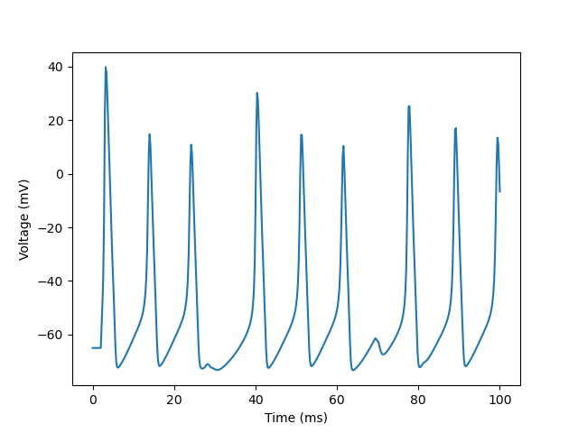
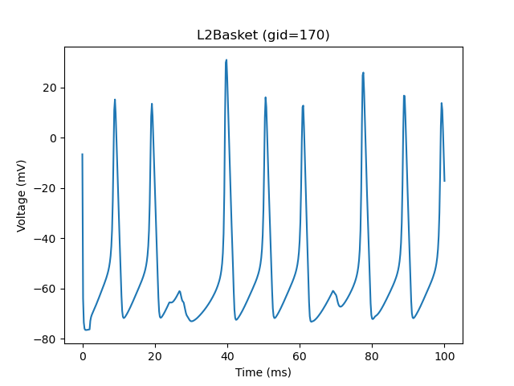

Note
Click here to download the full example code or to run this example in your browser via Binder
Plot firing pattern¶
This example demonstrates how to inspect the firing pattern of cells in the HNN model.
# Authors: Mainak Jas <mjas@harvard.mgh.edu>
import os.path as op
Let us import hnn_core
import hnn_core
from hnn_core import read_params, Network
from hnn_core.neuron import NeuronNetwork
hnn_core_root = op.dirname(hnn_core.__file__)
Then we read the parameters file
params_fname = op.join(hnn_core_root, 'param', 'default.json')
params = read_params(params_fname)
Now let’s build the network
import matplotlib.pyplot as plt
net = Network(params)
with NeuronNetwork(net) as neuron_network:
neuron_network.cells[0].plot_voltage()
# The cells are stored in the network object as a list
cells = neuron_network.cells
print(cells[:5])
# We have different kinds of cells with different cell IDs (gids)
gids = [0, 35, 135, 170]
for gid in gids:
print(cells[gid].name)
# We can plot the firing pattern of individual cells
neuron_network.cells[0].plot_voltage()
plt.title('%s (gid=%d)' % (cells[0].name, gid))
- 
- 
Out:
Loading custom mechanism files from /home/circleci/miniconda/envs/testenv/lib/python3.6/site-packages/hnn_core-0.1.dev0-py3.6.egg/hnn_core/mod/x86_64/.libs/libnrnmech.so
Building the NEURON model
[Done]
Simulating soma voltage
Simulation time: 0.2 ms...
Simulation time: 10.0 ms...
Simulation time: 20.0 ms...
Simulation time: 30.0 ms...
Simulation time: 40.0 ms...
Simulation time: 50.0 ms...
Simulation time: 60.0 ms...
Simulation time: 70.0 ms...
Simulation time: 80.0 ms...
Simulation time: 90.0 ms...
[Done]
[<L2Basket | soma: L 39.000000, diam 20.000000, Ra 200.000000, cm 0.850000>, <L2Basket | soma: L 39.000000, diam 20.000000, Ra 200.000000, cm 0.850000>, <L2Basket | soma: L 39.000000, diam 20.000000, Ra 200.000000, cm 0.850000>, <L2Basket | soma: L 39.000000, diam 20.000000, Ra 200.000000, cm 0.850000>, <L2Basket | soma: L 39.000000, diam 20.000000, Ra 200.000000, cm 0.850000>]
L2Basket
L2Pyr
L5Basket
L5Pyr
Simulating soma voltage
Simulation time: 0.2 ms...
Simulation time: 10.0 ms...
Simulation time: 20.0 ms...
Simulation time: 30.0 ms...
Simulation time: 40.0 ms...
Simulation time: 50.0 ms...
Simulation time: 60.0 ms...
Simulation time: 70.0 ms...
Simulation time: 80.0 ms...
Simulation time: 90.0 ms...
[Done]
Let’s do this for the rest of the cell types with a new NeuronNetwork object
with NeuronNetwork(net) as neuron_network:
fig, axes = plt.subplots(1, 2, sharey=True, figsize=(8, 4))
for gid, ax in zip([35, 170], axes):
neuron_network.cells[gid].plot_voltage(ax)
ax.set_title('%s (gid=%d)' % (cells[gid].name, gid))
Out:
Building the NEURON model
[Done]
Simulating soma voltage
Simulation time: 0.2 ms...
Simulation time: 10.0 ms...
Simulation time: 20.0 ms...
Simulation time: 30.0 ms...
Simulation time: 40.0 ms...
Simulation time: 50.0 ms...
Simulation time: 60.0 ms...
Simulation time: 70.0 ms...
Simulation time: 80.0 ms...
Simulation time: 90.0 ms...
[Done]
Simulating soma voltage
Simulation time: 0.2 ms...
Simulation time: 10.0 ms...
Simulation time: 20.0 ms...
Simulation time: 30.0 ms...
Simulation time: 40.0 ms...
Simulation time: 50.0 ms...
Simulation time: 60.0 ms...
Simulation time: 70.0 ms...
Simulation time: 80.0 ms...
Simulation time: 90.0 ms...
[Done]
Total running time of the script: ( 0 minutes 36.508 seconds)